13.y — Utiliser une référence du langage
Selon où vous en êtes dans votre apprentissage des langages de programmation (et plus précisément du C++), LearnCpp.com peut être la seule ressource que vous utilisez pour apprendre le C++ ou pour rechercher une information. LearnCpp.com est conçu pour expliquer les concepts de façon accessible aux débutants, mais il ne peut tout simplement pas couvrir chaque aspect du langage. À mesure que vous explorerez des sujets qui ne sont pas traités dans ces tutoriels, vous rencontrerez inévitablement des questions auxquelles ils ne répondent pas. Il vous faudra alors recourir à des ressources extérieures.
L'une de ces ressources est Stack Overflow, où vous pouvez poser vos questions (ou, mieux, lire la réponse à une question déjà posée par quelqu'un d'autre). Mais une meilleure première étape est parfois un guide de référence. Contrairement aux tutoriels, qui se concentrent sur les sujets les plus importants et utilisent un langage informel et courant pour faciliter l'apprentissage, les guides de référence décrivent le C++ avec précision, en utilisant une terminologie formelle. Pour cette raison, la documentation de référence tend à être exhaustive, exacte et... difficile à comprendre.
Dans cette leçon, nous allons montrer comment utiliser cppreference, une référence standard populaire que nous mentionnons tout au long de ces leçons, à travers trois exemples de recherche.
Vue d'ensemble
Cppreference vous accueille avec une vue d'ensemble du langage de base et des bibliothèques :
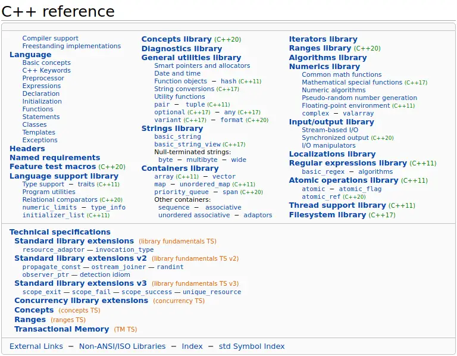
Depuis cette page, vous pouvez accéder à tout ce que cppreference propose, mais il est plus simple d'utiliser la fonction de recherche ou un moteur de recherche. La vue d'ensemble est un excellent endroit à consulter une fois que vous avez terminé les tutoriels de LearnCpp.com, pour approfondir les bibliothèques et découvrir ce que le langage offre d'autre et que vous ignorez peut-être.
La moitié supérieure du tableau présente les fonctionnalités actuellement présentes dans le langage, tandis que la moitié inférieure présente les spécifications techniques, c'est-à-dire des fonctionnalités qui peuvent ou non être ajoutées au C++ dans une future version, ou qui ont déjà été partiellement acceptées dans le langage. Cela peut être utile si vous souhaitez voir quelles nouvelles capacités arriveront prochainement.
À partir de C++11, cppreference indique pour chaque fonctionnalité la version de la norme du langage dans laquelle elle a été ajoutée. La version de la norme est le petit numéro vert que vous pouvez voir à côté de certains liens dans l'image ci-dessus. Les fonctionnalités sans numéro de version sont disponibles depuis C++98/03. Les numéros de version ne figurent pas seulement dans la vue d'ensemble, mais partout sur cppreference, ce qui vous permet de savoir exactement ce que vous pouvez ou ne pouvez pas utiliser dans une version donnée de C++.
Attention
Si vous utilisez un moteur de recherche et qu'une spécification technique vient d'être acceptée dans la norme, vous pouvez être redirigé vers cette spécification plutôt que vers la référence officielle, qui peut différer.
Astuce
Cppreference est une référence à la fois pour le C++ et pour le C. Comme le C++ partage certains noms de fonctions avec le C, vous pouvez vous retrouver dans la référence C après une recherche. L'URL et la barre de navigation en haut de cppreference indiquent toujours si vous consultez la référence C ou C++.
std::string::length
Commençons par étudier une fonction que vous connaissez déjà depuis une leçon précédente, std::string::length, qui renvoie la longueur d'une chaîne.
En haut à droite de cppreference, recherchez « string ». Cela affiche une longue liste de types et de fonctions, dont seul le haut est pertinent pour le moment.
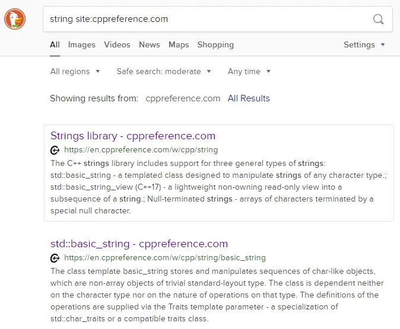
Nous aurions pu rechercher directement « string length », mais pour montrer le plus de choses possible dans cette leçon, nous prenons le chemin le plus long. En cliquant sur « Strings library », nous arrivons sur une page qui présente les différents types de chaînes que le C++ prend en charge.
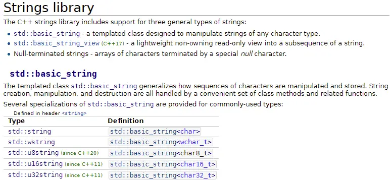
Si nous regardons la section « std::basic_string », nous voyons une liste de typedef, et dans cette liste se trouve std::string.
En cliquant sur « std::string », on arrive à la page de std::basic_string. Il n'existe pas de page pour std::string, car std::string est un typedef pour std::basic_string<char>, ce que l'on peut voir dans la liste des typedef :
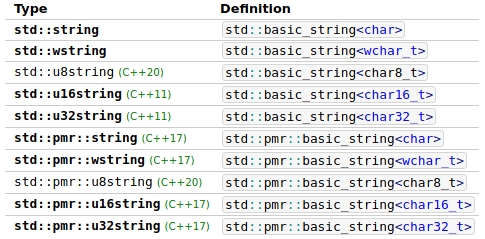
Le <char> signifie que chaque caractère de la chaîne est de type char. Vous remarquerez que le C++ propose d'autres chaînes qui utilisent des types de caractères différents. Celles-ci peuvent être utiles lorsqu'on travaille avec Unicode plutôt qu'avec ASCII.
Plus bas sur la même page se trouve une liste des fonctions membres (les comportements qu'un type possède). Si vous voulez savoir ce que vous pouvez faire avec un type, cette liste est très pratique. Vous y trouverez une ligne pour length (et size).
En suivant le lien, on accède à la description détaillée de length et size, qui font toutes deux la même chose.
Le haut de chaque page commence par un bref résumé de la fonctionnalité et de sa syntaxe, de ses surcharges ou de ses déclarations :
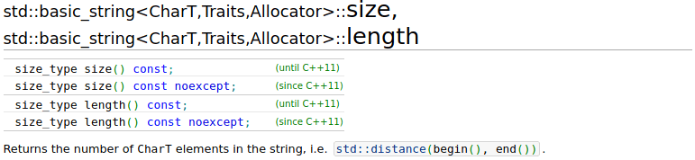
Le titre de la page indique le nom de la classe et de la fonction avec tous les paramètres de modèle. Nous pouvons ignorer cette partie. Sous le titre, nous voyons toutes les différentes surcharges de la fonction (les différentes versions de la fonction qui partagent le même nom) ainsi que la version de la norme à laquelle elles s'appliquent.
Ensuite, nous voyons les paramètres que la fonction prend et ce que signifie sa valeur de retour.
Comme std::string::length est une fonction simple, il n'y a pas beaucoup de contenu sur cette page. De nombreuses pages montrent des exemples d'utilisation de la fonctionnalité documentée, comme celle-ci :
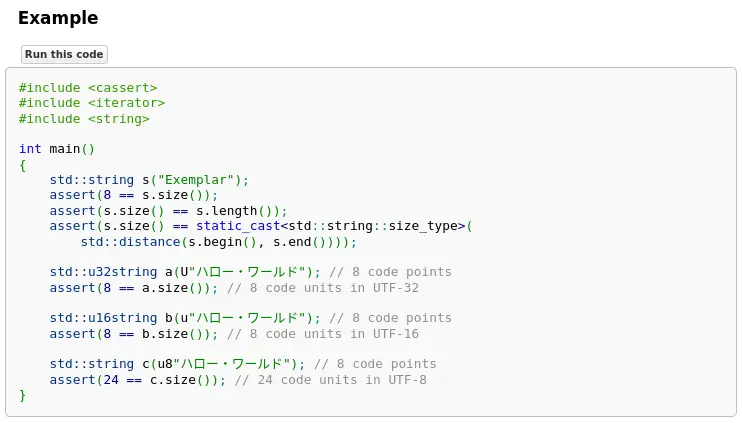
Tant que vous apprenez encore le C++, certains exemples contiendront des fonctionnalités que vous n'avez pas encore vues. S'il y a suffisamment d'exemples, vous comprendrez probablement assez pour vous faire une idée de la manière dont la fonction est utilisée et de ce qu'elle fait. Si l'exemple est trop compliqué, vous pouvez en chercher un ailleurs ou lire la référence des parties que vous ne comprenez pas (vous pouvez cliquer sur les fonctions et les types des exemples pour voir ce qu'ils font).
Nous savons maintenant ce que fait std::string::length, mais nous le savions déjà. Regardons quelque chose de nouveau !
std::cin.ignore
Dans la leçon 9.5 -- std::cin et la gestion des entrées invalides, nous avons parlé de std::cin.ignore, utilisée pour ignorer tout jusqu'à un saut de ligne. L'un des paramètres de cette fonction est une valeur longue et verbeuse. C'était quoi, déjà ? Ne peut-on pas simplement utiliser un grand nombre ? Que fait réellement cet argument ? Découvrons-le !
En saisissant « std::cin.ignore » dans la recherche de cppreference, on obtient les résultats suivants :
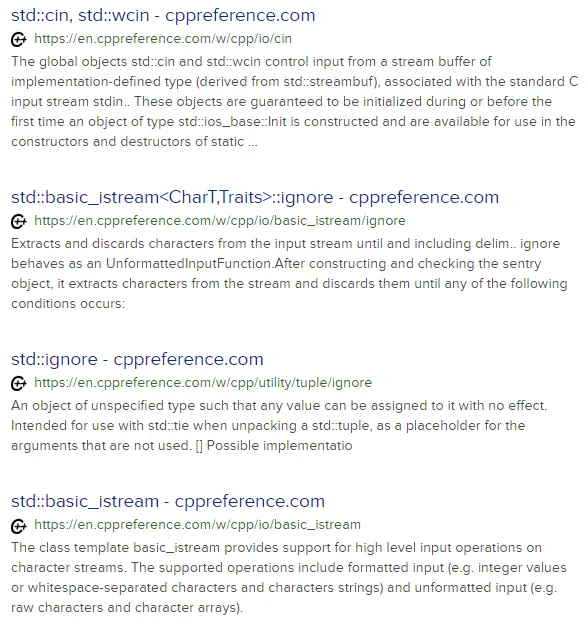
std::cin, std::wcin- Nous voulons.ignore, pas simplementstd::cin.std::basic_istream<CharT,Traits>::ignore- Beurk, c'est quoi ça ? Passons pour l'instant.std::ignore- Non, ce n'est pas ça.std::basic_istream- Ce n'est pas non plus cela.
Ce n'est pas là, et maintenant ? Allons sur std::cin et progressons à partir de là. Rien d'évident sur cette page. En haut, nous voyons la déclaration de std::cin et std::wcin, ainsi que le nom de l'en-tête à inclure pour utiliser std::cin :
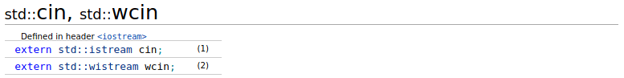
Nous voyons que std::cin est un objet de type std::istream. Suivons le lien vers std::istream :
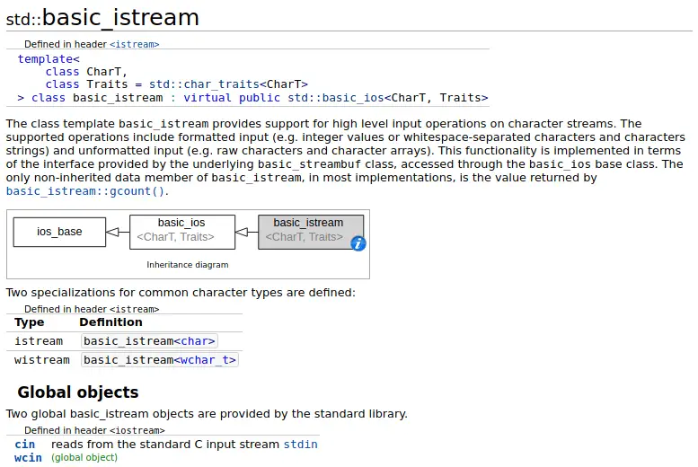
Attendez ! Nous avons déjà vu std::basic_istream lorsque nous avons recherché « std::cin.ignore » dans le moteur de recherche. Il s'avère que istream est un nom de typedef pour basic_istream, donc notre recherche n'était peut-être pas si mauvaise finalement.
En descendant sur cette page, nous retrouvons des fonctions familières :
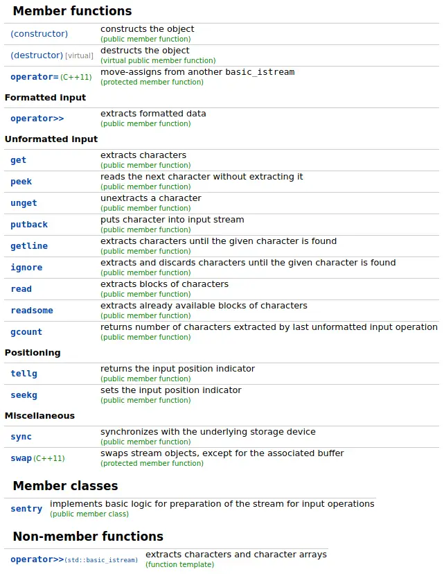
Nous avons déjà utilisé beaucoup de ces fonctions : operator>>, get, getline, ignore. Parcourez la page pour vous faire une idée de ce qu'offre encore std::cin. Puis cliquez sur ignore, puisque c'est ce qui nous intéresse.
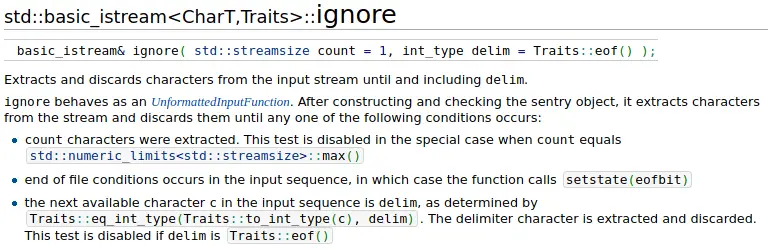
En haut de la page figurent la signature de la fonction et une description de ce que font la fonction et ses deux paramètres. Les signes = après les paramètres indiquent un argument par défaut (nous verrons cela dans la leçon 11.5 -- Arguments par défaut). Si nous ne fournissons pas d'argument pour un paramètre qui possède une valeur par défaut, cette valeur par défaut est utilisée.
Le premier point répond à toutes nos questions. On voit que std::numeric_limits<std::streamsize>::max() a une signification particulière pour std::cin.ignore : elle désactive la vérification du nombre de caractères. Cela signifie que std::cin.ignore continuera à ignorer des caractères jusqu'à trouver le délimiteur, ou jusqu'à ce qu'il n'y ait plus de caractères à examiner.
Souvent, il n'est pas nécessaire de lire toute la description d'une fonction que l'on connaît déjà, mais dont on a oublié la signification des paramètres ou de la valeur de retour. Dans ce cas, la description du paramètre ou de la valeur de retour suffit.
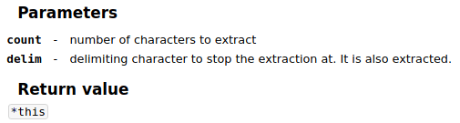
La description du paramètre est brève. Elle ne contient pas le traitement particulier de std::numeric_limits<std::streamsize>::max() ni les autres conditions d'arrêt, mais elle sert de bon rappel.
Un exemple de grammaire du langage
En plus de la bibliothèque standard, cppreference documente aussi la grammaire du langage. Voici un programme valide :
#include <iostream>
int getUserInput()
{
int i{};
std::cin >> i;
return i;
}
int main()
{
std::cout << "How many bananas did you eat today? \n";
if (int iBananasEaten{ getUserInput() }; iBananasEaten <= 2)
{
std::cout << "Yummy\n";
}
else
{
std::cout << iBananasEaten << " is a lot!\n";
}
return 0;
}
Pourquoi y a-t-il une définition de variable dans la condition de l'if ? Utilisons cppreference pour le savoir en recherchant « cppreference if statement » dans notre moteur de recherche favori. Cela nous mène à la page sur les instructions if. En haut, se trouve une référence de syntaxe.
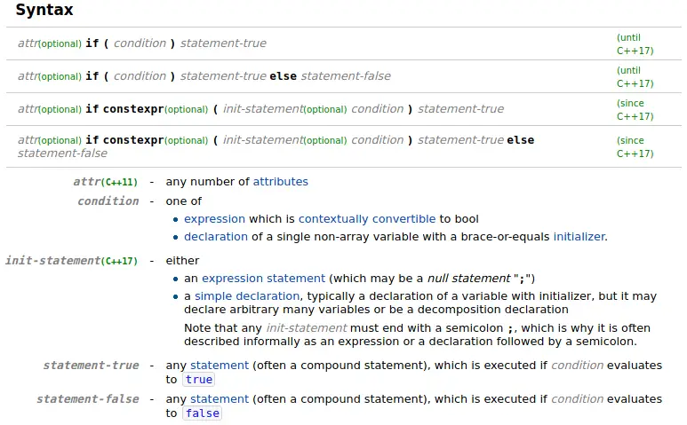
Regardez la syntaxe de l'instruction if. Si vous retirez toutes les parties optionnelles, vous obtenez une instruction if que vous connaissez déjà. Avant la condition, il y a un init-statement optionnel, qui correspond à ce qui se passe dans le code ci-dessus.
if ( init-statement condition ) statement-true
if ( init-statement condition ) statement-true else statement-false
Sous la référence de syntaxe, une explication de chaque partie de la syntaxe est donnée, y compris pour l'init-statement. Il y est indiqué que l'init-statement est typiquement la déclaration d'une variable avec un initialiseur.
Vient ensuite une explication des instructions if avec des exemples simples :
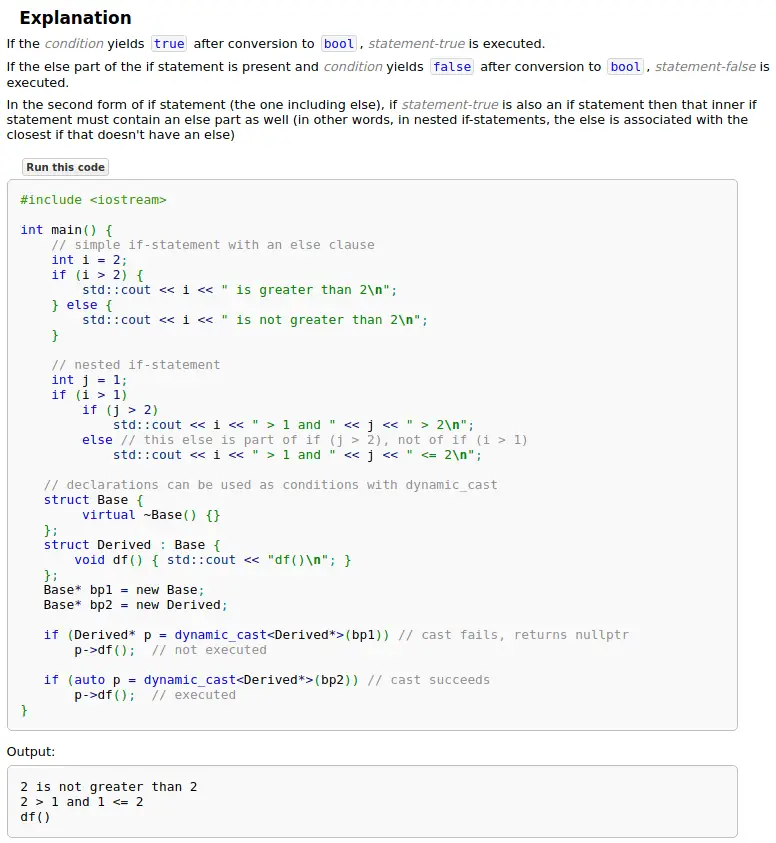
Nous savons déjà comment fonctionnent les instructions if, et les exemples ne contiennent pas d'init-statement. Nous descendons donc un peu pour trouver une section consacrée aux instructions if avec initialiseurs :
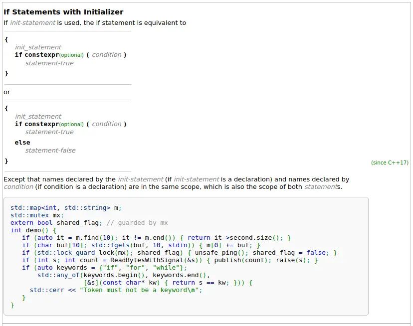
On montre d'abord comment l'init-statement peut être écrit sans l'utiliser réellement. Nous savons maintenant ce que fait le code en question : il s'agit d'une déclaration de variable ordinaire, simplement intégrée à l'instruction if.
La phrase suivante est intéressante, car elle nous indique que les noms déclarés dans l'init-statement sont disponibles dans les deux instructions (statement-true et statement-false). Cela peut surprendre, car on pourrait supposer que la variable n'est disponible que dans statement-true.
Les exemples d'init-statement utilisent des fonctionnalités et des types que nous n'avons pas encore vus. Il n'est pas nécessaire de tout comprendre pour saisir le fonctionnement de l'init-statement. Ignorons tout ce qui est trop obscur jusqu'à trouver quelque chose avec quoi nous pouvons travailler :
// Itérateurs, nous ne les connaissons pas. On passe.
if (auto it = m.find(10); it != m.end()) { return it->second.size(); }
// [10], c'est quoi ? On passe.
if (char buf[10]; std::fgets(buf, 10, stdin)) { m[0] += buf; }
// std::lock_guard, nous ne connaissons pas ça, mais c'est un type. Nous savons ce que sont les types !
if (std::lock_guard lock(mx); shared_flag) { unsafe_ping(); shared_flag = false; }
// C'est facile, c'est un int !
if (int s; int count = ReadBytesWithSignal(&s)) { publish(count); raise(s); }
// Ouf, non merci !
if (auto keywords = {"if", "for", "while"};
std::any_of(keywords.begin(), keywords.end(),
[&s](const char* kw) { return s == kw; })) {
std::cerr << "Token must not be a keyword\n";
}
L'exemple le plus simple semble être celui avec un int. Mais après le point-virgule, il y a une autre définition, étrange... Revenons à l'exemple avec std::lock_guard.
if (std::lock_guard lock(mx); shared_flag)
{
unsafe_ping();
shared_flag = false;
}
À partir de là, il est relativement facile de voir comment fonctionne un init-statement : on définit une variable (lock), puis un point-virgule, puis la condition. C'est exactement ce qui se passe dans notre exemple.
Un avertissement sur l'exactitude de cppreference
Cppreference n'est pas une source de documentation officielle, mais un wiki. Dans un wiki, n'importe qui peut ajouter et modifier du contenu : celui-ci provient de la communauté. Bien qu'il soit facile d'y ajouter des informations erronées, ces erreurs sont généralement repérées et supprimées rapidement, ce qui fait de cppreference une source fiable.
La seule source officielle du C++ est la norme (brouillons libres sur github), qui est un document formel et peu commode à utiliser comme référence.
Quiz
Question n° 1
Que affiche le programme suivant ? Ne l'exécutez pas, utilisez une référence pour déterminer ce que fait erase.
#include <iostream>
#include <string>
int main()
{
std::string str{ "The rice is cooking" };
str.erase(4, 11);
std::cout << str << '\n';
return 0;
}
Astuce
Lorsque vous trouvez erase sur cppreference, vous pouvez ignorer les surcharges qui utilisent des itérateurs.
Astuce
Les indices en C++ commencent à 0. Le caractère à l'indice 0 dans la chaîne « House » est « H », à 1 c'est « o », et ainsi de suite.
Solution
The king
Voici comment y arriver en utilisant la fonction de recherche de cppreference (vous avez peut-être sauté la première étape en utilisant un moteur de recherche) :
En recherchant string et en cliquant sur « std::string », on arrive sur std::basic_string.
En descendant jusqu'à la liste « Member functions », on trouve erase. Comme l'indique l'astuce ci-dessus, on utilise la première surcharge de fonction. Elle prend 2 arguments de type size_type (type entier non signé). Dans notre exemple, 4 et 11. D'après la description de (1), elle supprime « min(count, size() - index) caractères à partir de index ». En remplaçant par nos arguments, elle supprime min(11, 19 - 4) = 11 caractères à partir de l'indice 4.
Question n° 2
Dans le code suivant, modifiez str pour que sa valeur soit « I saw a blue car yesterday. » sans répéter la chaîne. Par exemple, ne faites pas ceci :
str = "I saw a blue car yesterday.";
Il vous suffit d'appeler une seule fonction pour remplacer « red » par « blue ».
#include <iostream>
#include <string>
int main()
{
std::string str{ "I saw a red car yesterday." };
// ...
std::cout << str << '\n'; // I saw a blue car yesterday.
return 0;
}
Indice
Indice : std::basic_string
Indice
Indice
Indice : Modificateurs de std::basic_string
Indice
Indice : std::basic_string::replace
Solution
#include <iostream>
#include <string>
int main()
{
std::string str{ "I saw a red car yesterday." };
str.replace(8, 3, "blue");
std::cout << str << '\n'; // I saw a blue car yesterday.
return 0;
}
Source originale : https://www.learncpp.com/cpp-tutorial/using-a-language-reference/